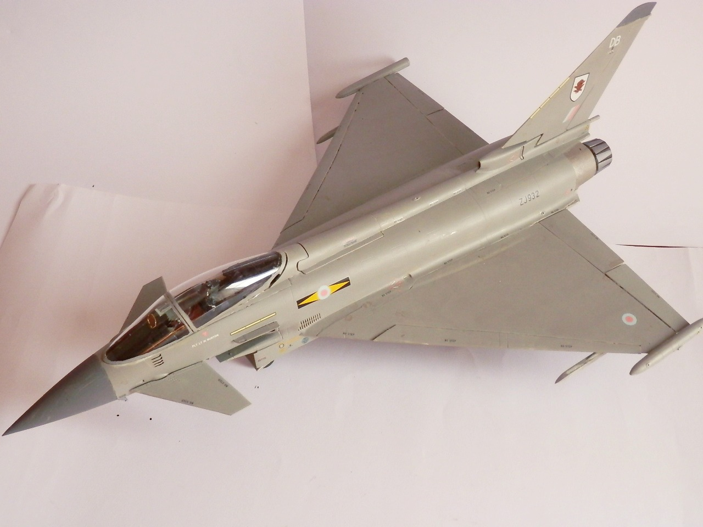
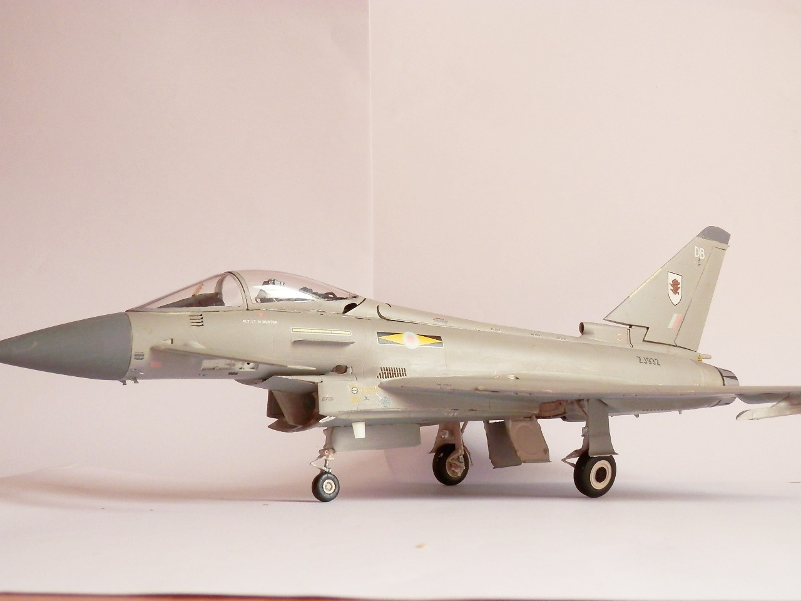
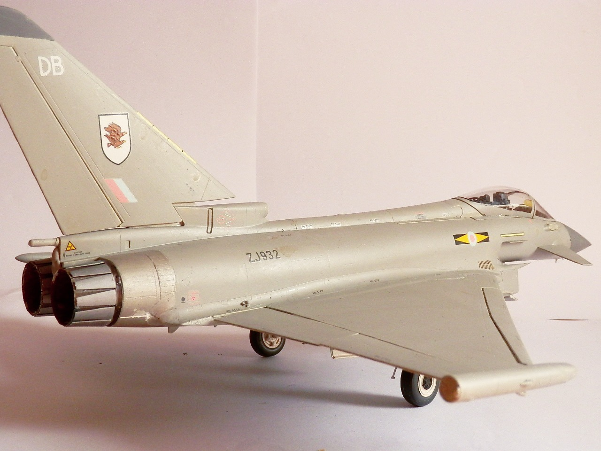
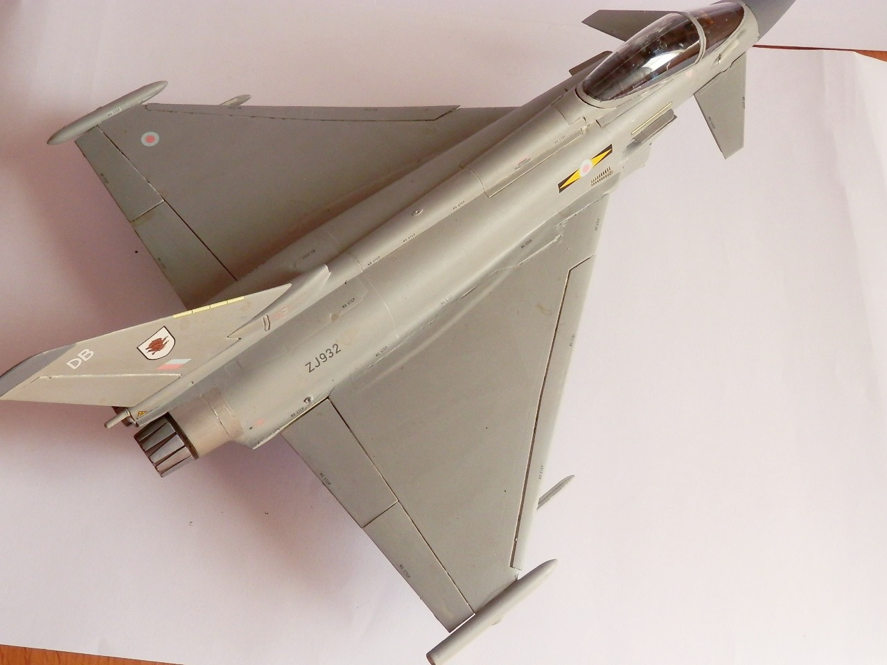
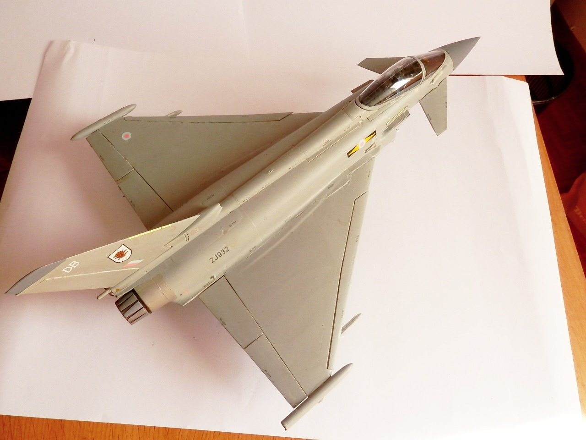
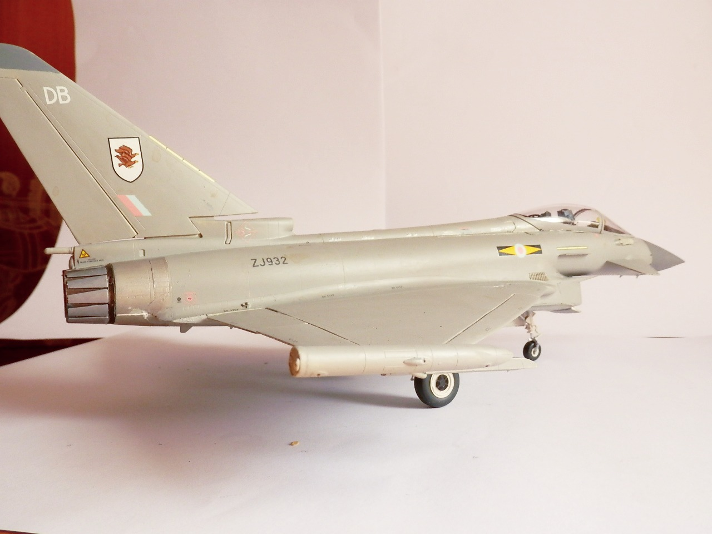

Aerei · scale model archive
Eurofighter Typhoon
Eurofighter Typhoon — Kit: Revell, Scale: 1/32. In RAF colours, huge kit, some weathering still required

Photo gallery





English description
In RAF colours, huge kit, some weathering still required
Descrizione italiana
In colori RAF, kit enorme; manca ancora un po’ di invecchiamento.